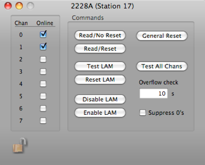

2228A TDC


The 2228A converts the measured time intervals into a 11-bit digital number at the rate of 20 MHz, for a full scale digitizing time of 100 mSec. Rear panel control of full-scale and conversion slope permits digitization to fewer bits and a shorter conversion time if desired. The conversion clock is started in phase with the TDC start signal to assure synchronization and eliminate the inaccuracy introduced by the free- running oscillators in conventional designs. LAM, if enabled, is generated at the end of the conversion interval.
The 2228A has three switch-selectable full-scale time ranges, 100, 200 and 500 nSec, which are digitized to 95% of 11 bits (2048 channels) and provide 50, 100, and 250 pSec resolutions respectively. Longer time ranges (up to 10 uSec) may be provided on request at slight expense of stability and accuracy. On line testing is facilitated by either a front panel common stop input of F(25). A signal at the common stop input generates simultaneous stops for each channel, permitting accurate testing of both front end and scaler section of the module and uniform system testing and time calibration. F(25) is provided for a quick test of the front end and scaler sections with a time measurement of 80% of full scale. In higher rate or colliding beam experiments, excessive system deadtime due to false starts. may be eliminated through use of the 2228A's fast clear input. Accepting NIM level signals, this input allows the TDC to be cleared at any point in its conversion cycle without the necessity for any Dataway operations. All standard LAM functions are available in the 2228A to facilitate data readout. To minimize readout time, both Q and LAM may be suppressed if the module does not contain data.
Data Record
The 2228a will try to format its data into a series of single word records. However, it is possible that it will be forced to use the long form. If write analysis programs, you need to be prepared to handle either form.
Short Form
1xxx xxxx xxxx xxxx xxxx xxxx xxxx xxxx
^^^^ ^^--------------------------------- 2228a ID (from header)
---------^-^^^--------------------------- Crate number
--------------^-^^^^--------------------- Card number
---------------------^^^^---------------- Channel number
--------------------------^^^^ ^^^^ ^^^^- tdc value
Long Form
0xxx xxxx xxxx xxxx xxxx xxxx xxxx xxxx
^^^^ ^^^^ ^^^^ ^^----------------------- 2228a ID (from header)
-----------------^^ ^^^^ ^^^^ ^^^^ ^^^^- length (always 2 longs)
xxxx xxxx xxxx xxxx xxxx xxxx xxxx xxxx
--------^-^^^--------------------------- Crate number
-------------^-^^^^--------------------- Card number
--------------------^^^^---------------- Channel number
-------------------------^^^^ ^^^^ ^^^^- tdc value
Select online channels
Option to NOT include data consists of 0’s
General CAMAC commands for testing this card